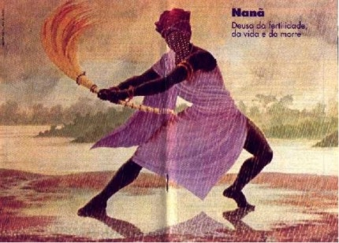

Jonville,Quarta-feira, 27 de Fevereiro de 2013

Nanã
Nanã era considerada como a grande justiceira. Qualquer problema que ocorria em seu reino, os habitantes a procuravam para ser a juíza das causas. No entanto, Nanã era conhecida como aquela que sempre castigava mais os homens, perdoando as mulheres. Nanã possuía um jardim em seu palácio onde havia um quarto para o eguns, que eram comandados por ela. Se alguma mulher reclamava do marido, Nanã mandava prendê-lo chamando os eguns para assustá-lo, libertando o faltoso em seguida. Osalufã sabedor das atitudes da velha Nanã resolveu visitá-la. Chegou a seu palácio faminto e pediu a Nanã que lhe preparasse um suco com igbins. Oxalufã muito sabido fez Nanã beber dele, acalmando-a e a cada dia que passava ela gostava mais do velho rei. Pouco a pouco Nanã foi cedendo aos pedidos do velho, até que um dia levou-o a seu jardim secreto, mostrando-lhe como controlava os eguns. Na ausência de Nanã, Oxalufã vestiu-se de mulher e foi ter com os eguns, chamando-os exatamente como Nanã fazia, ordenando-lhes que deveriam obedecer a partir dali somente ao homem que vivia na casa da rainha. Em seu retorno Nanã tomou conhecimento do fato ficando zangada com o velho rei. Foi então que rogou uma praga no velho rei que partir dali nunca mais usaria vestes masculinas. Por isso até hoje Oxalufã veste-se com saia cumprida e cobre o rosto como as deusas rainhas.
Nanan Buruku é a divindade das águas, a mais antiga de todas, muito velha e arredia, dona das águas paradas, das lagoas e dos pântanos. Certa feita, numa reunião com todos os Imalés, falou-se muito sobre Obatalá, aquele que criou os homens, sobre Orunmyilá, o dono do destino dos seres humanos. Sobre Esu disseram que era um importante mensageiro, e sobre Ogun, que era o mais importante de todos, que era o dono do ferro e dos metais e que sem as ferramentas que ele fazia era impossível plantar, colher, construir ou fazer a guerra. Todos o reverenciaram, menos Nanan Buruku. Ela se dispôs a provar que não precisava dos metais. Com as madeiras mais duras da floresta fez cavadeiras para semear e cavar; para caçar, fez flechas de caniço e osso; para cozinhar, panelas de barro; para guerrear, lanças e clavas, facas de bambu e escudos de couro de rinoceronte. É por isso que não se usam objetos de metal para matar os animais oferecidos a Nanan Buruku. Dizem que quando Olorum encarregou Osalá de fazer o mundo e modelar o ser humano, o Òrìsà tentou vários caminhos. Tentou fazer o homem de ar, como ele. Não deu certo, pois o homem logo se desvaneceu. Tentou fazer de pau, mas a criatura ficou dura. De pedra, mas ainda a tentativa foi pior. Fez de fogo e o homem se consumiu. Tentou azeite, água e até vinho de palma, e nada. Foi então que Nanã veio em seu socorro e deu a Osalá a lama, o barro do fundo da lagoa onde morava ela, a lama sob as águas, que é Nanã. Osalá criou o homem, o modelou no barro. Com o sopro de Olorum ele caminhou. Com a ajuda dos òrìsà povoou a Terra. Mas tem um dia que o homem tem que morrer. O seu corpo tem que voltar à terra, voltar à natureza de Nanã. Nanã deu a matéria no começo mas quer de volta no final tudo o que é.
Nanan Buruku é a divindade das águas, a mais antiga de todas, muito velha e arredia, dona das águas paradas, das lagoas e dos pântanos. Certa feita, numa reunião com todos os Imalés, falou-se muito sobre Obatalá, aquele que criou os homens, sobre Orunmyilá, o dono do destino dos seres humanos. Sobre Esu disseram que era um importante mensageiro, e sobre Ogun, que era o mais importante de todos, que era o dono do ferro e dos metais e que sem as ferramentas que ele fazia era impossível plantar, colher, construir ou fazer a guerra. Todos o reverenciaram, menos Nanan Buruku. Ela se dispôs a provar que não precisava dos metais. Com as madeiras mais duras da floresta fez cavadeiras para semear e cavar; para caçar, fez flechas de caniço e osso; para cozinhar, panelas de barro; para guerrear, lanças e clavas, facas de bambu e escudos de couro de rinoceronte. É por isso que não se usam objetos de metal para matar os animais oferecidos a Nanan Buruku. Dizem que quando Olorum encarregou Osalá de fazer o mundo e modelar o ser humano, o Òrìsà tentou vários caminhos. Tentou fazer o homem de ar, como ele. Não deu certo, pois o homem logo se desvaneceu. Tentou fazer de pau, mas a criatura ficou dura. De pedra, mas ainda a tentativa foi pior. Fez de fogo e o homem se consumiu. Tentou azeite, água e até vinho de palma, e nada. Foi então que Nanã veio em seu socorro e deu a Osalá a lama, o barro do fundo da lagoa onde morava ela, a lama sob as águas, que é Nanã. Osalá criou o homem, o modelou no barro. Com o sopro de Olorum ele caminhou. Com a ajuda dos òrìsà povoou a Terra. Mas tem um dia que o homem tem que morrer. O seu corpo tem que voltar à terra, voltar à natureza de Nanã. Nanã deu a matéria no começo mas quer de volta no final tudo o que é.
Notícias...
----------------------------------
Copyright © 2011- Todos direitos reservados à ACCAIA
Rua Arildo Jose da Silva,99 - Itinga Joinville - SC - Cep: 89245000
::: Suporte 04791261971 :::